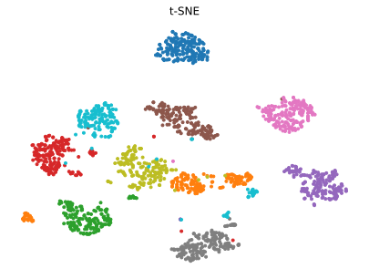
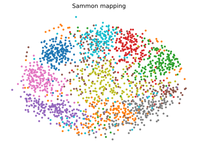
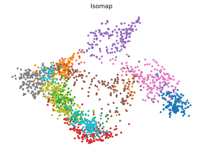
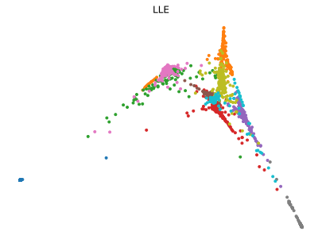
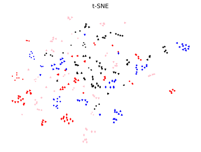
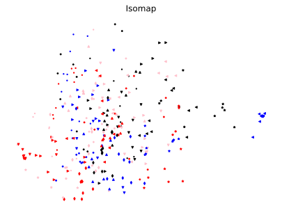
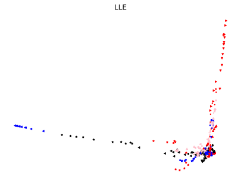

![]()
1 Introduction
Visualization of high-dimensional data is an important problem in many different domains, and deals with data of widely varying dimensionality. Cell nuclei that are relevant to breast cancer, for example, are described by approximately 30 variables Street, Wolberg, and Mangasarian (1993), whereas the pixel intensity vectors used to represent images or the word-count vectors used to represent documents typically have thousands of dimensions. Over the last few decades, a variety of techniques for the visualization of such high-dimensional data have been proposed, many of which are reviewed by Ferreira de Oliveira and Levkowitz (2003). Important techniques include iconographic displays such as Chernoff faces Chernoff (1973), pixel-based techniques Keim (2000), and techniques that represent the dimensions in the data as vertices in a graph Di Battista et al. (1994). Most of these techniques simply provide tools to display more than two data dimensions, and leave the interpretation of the data to the human observer. This severely limits the applicability of these techniques to real-world data sets that contain thousands of high-dimensional datapoints.
In contrast to the visualization techniques discussed above, dimensionality reduction methods convert the high-dimensional data set \mathcal{X} = {x_1, x_2, \dots, x_n} into two or three-dimensional data \mathcal{Y} = {y_1, y_2, \dots, y_n} that can be displayed in a scatterplot. In the paper, we refer to the low-dimensional data representation \mathcal{Y} as a map, and to the low-dimensional representations y_i of individual datapoints as map points. The aim of dimensionality reduction is to preserve as much of the significant structure of the high-dimensional data as possible in the low-dimensional map. Various techniques for this problem have been proposed that differ in the type of structure they preserve. Traditional dimensionality reduction techniques such as Principal Components Analysis Hotelling (1933) and classical multidimensional scaling Torgerson (1952) are linear techniques that focus on keeping the low-dimensional representations of dissimilar datapoints far apart. For high-dimensional data that lies on or near a low-dimensional, non-linear manifold it is usually more important to keep the low-dimensional representations of very similar datapoints close together, which is typically not possible with a linear mapping.
A large number of nonlinear dimensionality reduction techniques that aim to preserve the local structure of data have been proposed, many of which are reviewed by John A. Lee and Verleysen (2007). In particular, we mention the following seven techniques: (1) Sammon mapping Sammon (1969), (2) curvilinear components analysis Demartines and Herault (1997), (3) Stochastic Neighbor Embedding Hinton and Roweis (2003); (4) Isomap Tenenbaum, Silva, and Langford (2000), (5) Maximum Variance Unfolding Kilian Q. Weinberger, Sha, and Saul (2004); (6) Locally Linear Embedding Roweis and Saul (2000), and (7) Laplacian Eigenmaps Belkin and Niyogi (2001). Despite the strong performance of these techniques on artificial data sets, they are often not very successful at visualizing real, high-dimensional data. In particular, most of the techniques are not capable of retaining both the local and the global structure of the data in a single map. For instance, a recent study reveals that even a semi-supervised variant of MVU is not capable of separating handwritten digits into their natural clusters Song et al. (2008).
In this paper, we describe a way of converting a high-dimensional data set into a matrix of pairwise similarities and we introduce a new technique, called “t-SNE”, for visualizing the resulting similarity data. t-SNE is capable of capturing much of the local structure of the high-dimensional data very well, while also revealing global structure such as the presence of clusters at several scales. We illustrate the performance of t-SNE by comparing it to the seven dimensionality reduction techniques mentioned above on five data sets from a variety of domains. Because of space limitations, most of the (7+1)\times5=40 maps are presented in the supplemental material, but the maps that we present in the paper are sufficient to demonstrate the superiority of t-SNE.
The outline of the paper is as follows. In Section 2, we outline SNE as presented by Hinton and Roweis (2003), which forms the basis for t-SNE. In Section 3, we present t-SNE, which has two important differences from SNE. In Section Section 4, we describe the experimental setup and the results of our experiments. Subsequently, Section 5 shows how t-SNE can be modified to visualize real-world data sets that contain many more than 10,000 datapoints. The results of our experiments are discussed in more detail in Section 6. Our conclusions and suggestions for future work are presented in Section 7.
2 Stochastic Neighbor Embedding
Stochastic Neighbor Embedding (SNE) starts by converting the high-dimensional Euclidean distances between datapoints into conditional probabilities that represent similarities.1 The similarity of datapoint x_j to datapoint x_i is the conditional probabilities, p_{j|i}, that x_i would pick x_j as its neighbor if neighbors were picked in proportion to their probability density under a Gaussian centered at x_i. For nearby datapoints, p_{j|i} is relatively high, whereas for widely separated datapoints, p_{j|i} will be almost infinitesimal (for reasonable values of the variance of the Gaussian, \sigma_i). Mathematically, the conditional probability p_{j|i} is given by
p_{j|i} = \frac{\exp(-\|x_i - x_j\|^2/(2\sigma_i^2))}{\sum_{k\neq i} \exp(-\|x_i - x_k\|^2 / 2 \sigma_i^2)}\,. \tag{1}
where \sigma_i is the variance of the Gaussian that is centered on datapoint x_i. The method for determining the value of \sigma_i is presented later in this section. Because we are only interested in modeling pairwise similarities, we set the value of p_{i|i} to zero. For the low-dimensional counterparts y_i and y_j of the high-dimensional datapoints x_i and x_j, it is possible to compute a similar conditional probability, which we denote by q_{j|i}. We set 2 the variance of the Gaussian that is employed in the computation of the conditional probabilities q_{j|i} to \frac{1}{\sqrt{2}}. Hence, we model the similarity of a map point y_j to map point y_i by
q_{j|i} = \frac{\exp(-\|y_i - y_j\|^2)}{\sum_{k \neq i} \exp(-\|y_i -y_k\|^2)}\,.
Again, since we are only interested in modeling pairwise similarities, we set q_{i|i}=0.
If the map points y_i and y_j correctly model the similarity between the high-dimensional data-points x_i and x_j, the conditional probabilities p_{j|i} and q_{j|i} will be equal. Motivated by this observation, SNE aims to find a low-dimensional data representation that minimizes the mismatch between p_{j|i} and q_{j|i}. A natural measure of the faithfulness with which q_{j|i} models p_{j|i} is the Kullback-Leibler divergence (which is in the case equal to the cross-entropy up to an additive constant). SNE minimizes the sum of Kullback-Leibler divergences over all datapoints using a gradient descent method. The cost function C is given by
C = \sum_i KL(P_i\|Q_i) = \sum_i \sum_j p_{j|i} \log \frac{p_{j|i}}{q_{j|i}}\,, \tag{2}
in which P_i represents the conditional probability distribution over all other datapoints given datapoint x_i, and Q_i represents the conditional probability distribution over all other map points given map point y_i. Because the Kullback-Liebler divergence is not symmetric, different types of error in the pairwise distances in the low-dimensional map are not weighted equally. In particular, there is a large cost for using widely separated map points to represent nearby datapoints (i.e, for using a small q_{j|i} to model a large p_{j|i}), but there is only a small cost for using nearby map points to represent widely separated datapoints. This small cost comes from wasting some of the probability mass in the relevant Q distributions. In other words, the SNE cost function focuses on retaining the local structure of the data in the map (for reasonable values of the variance of the Gaussian in the high-dimensional space, \sigma_i).
The remaining parameter to be selected the variance \sigma_i of the Gaussian that is centered over each high-dimensional datapoint, x_i. It is not likely that there is a single value of \sigma_i that is optimal for all datapoints in the data set because the density of the data is likely to vary. In dense regions, a smaller value of \sigma_i is usually more appropriate than in sparser regions. Any particular value of \sigma_i induces a probability distribution, P_i, over all of the other datapoints. This distribution has an entropy which increases as \sigma_i increases. SNE performs a binary search for the value of \sigma_i that produces a P_i with a fixed perplexity that is specified by the user3. The perplexity is defined as
Perp(P_i) = 2^{H(P_i)}\,,
where H(P_i) is the Shannon entropy of P_i measured in bits
H(P_i) = - \sum_j p_{j|i} \log_2 p_{j|i}\,.
The perplexity can be interpreted as a smooth measure of the effective number of neighbors. The performance of SNE is fairly robust to changes in the perplexity, and typical values are between 5 and 50.
The minimization of the cost function in Equation 2 is performed using a gradient descent method. The gradient has a surprisingly simple form
\frac{\partial C}{\partial y_i} = 2 \sum_j (p_{j|i} - q_{j|i} + p_{i|j} - q_{i|j})(y_i - y_j)\,.
Physically, the gradient may be interpreted as the resultant force created by a set of springs between the map point y_i and all other map points y_j. All springs exert a force along the direction (y_i - y_j). The spring between y_i and y_j repels or attracts the map points depending on whether the distance between the two in the map is too small or too large to represent the similarities between the two high-dimensional datapoints. The force exerted by the spring between y_i and y_j is proportional to its length, and also proportional to its stiffness, which is the mismatch (p_{j|i} - q_{j|i} + p_{i|j} + q_{i|j}) between the pairwise similarities of the data points.
The gradient descent is initialized by sampling map points randomly from an isotropic Gaussian with small variance that is centered around the origin. In order to speed up the optimization and to avoid poor local minima, a relatively large momentum term is added to the gradient. In other words, the current gradient is added to an exponentially decaying sum of previous gradients in order to determine the changes in the coordinates of the map points at each iteration of the gradient search. Mathematically, the gradient update with a momentum term is given by
\mathcal{Y}^{(t)} = \mathcal{Y}^{(t-1)} + \eta \frac{\partial C}{\partial \mathcal{Y}} + \alpha(t) \left( \mathcal{Y}^{(t-1)} - \mathcal{Y}^{(t-2)}\right)\,,
where \mathcal{Y}^{(t)} indicates the solution at iteration t, \eta indicates the learning rate, and \alpha(t) represents the momentum at iteration t.
In addition, in the early stages of the optimization, Gaussian noise is added to the map points after each iteration. Gradually reducing the variance of this noise performs a type of simulated annealing that helps the optimization to escape from poor local minima in the cost function. If the variance of the noise changes very slowly at the critical point at which the global structure of the map starts to form, SNE tends to find maps with a better global organization. Unfortunately, this requires sensible choices of the initial amount of Gaussian noise and the rate at which it decays. Moreover, these choices interact with the amount of momentum and the step size that are employed in the gradient descent. It is therefore common to run the optimization several times on a data set to find appropriate values for the parameters.4 In this respect, SNE is inferior to methods that allow convex optimization and it would be useful to find an optimization method that gives good results without requiring the extra computation time and parameter choices introduced by the simulated annealing.
3 t-Distributed Stochastic Neighbor Embedding
Section 2 discussed SNE as it was presented by Hinton and Roweis (2003). Although SNE constructs reasonably good visualizations, it is hampered by a cost function that is difficult to optimize and by a problem we refer to as the “crowding problem.” In this section, we present a new technique called “t-Distributed Stochastic Neighbor Embedding” or “t-SNE” that aims to alleviate these problems. The cost function used by t-SNE differs from the one used by SNE in two ways: (1) it uses a symmetrized version of the SNE cost function with simpler gradients that was briefly introduced by Cook et al. (2007) and (2) it uses a Student-t distribution rather than a Gaussian to compute the similarity between two points in the low dimensional space. t-SNE employs a heavy-tailed distribution in the low-dimensional space to alleviate both the crowding problem and the optimization problems of SNE.
In this section, we first discuss the symmetric version of SNE (Section 3.1). Subsequently, we discuss the crowding problem (Section 3.2), and the use of heavy-tailed distributions to address this problem (Section 3.3). We conclude the by describing our approach to the optimization of the t-SNE cost function (Section 3.4).
3.1 Symmetric SNE
As an alternative to minimizing the sum of the Kullback-Leibler divergences between the conditional probabilities p_{j|i} and q_{j|i}, it is also possible to minimize a single Kullback-Leibler divergence between a joint probability distribution, P, in the high-dimensional space and a joint probability distribution, Q, in the low-dimensional space:
C = KL(P\|Q) = \sum_i \sum_j p_{ij} \log \frac{p_{ij}}{q_{ij}}\,,
where again, we set p_{ij} and q_{ii} to zero. We refer to this type of SNE as symmetric SNE, because it has the property that p_{ij} = p_{ji} and q_{ij} = q_{ji} for all i, j. In symmetric SNE, the pairwise similarities in the low-dimensional map q_{ij} are given by
q_{ij} = \frac{\exp(-\|x_i - x_j\|^2)}{\sum_{k\neq l} \exp(-\|x_k - x_l\|^2)}\,. \tag{3}
The obvious way to define the pairwise similarities in the high-dimensional space p_{ij} is
p_{ij} = \frac{\exp(-\|x_i - x_j\|^2/2\sigma^2)}{\sum_{k\neq l} \exp(-\|x_k - x_l\|^2/2\sigma^2)}\,
but this causes problems when a high-dimensional datapoint x_i is an outlier (i.e., all pairwise distances \|x_i - x_j\|^2 are large for x_i). For such an outlier, the values of p_{ij} are extremely small for all j, so the location of its low-dimensional map point y_i has very little effect on the cost function. As a result, the position of the map point is not well determined by the positions of the other map points. We circumvent this problem by defining the joint probabilities p_{ij} in the high dimensional space to be symmetrized conditional probabilities, that is, we set p_{ij} = \frac{p_{j|i} + p_{i|j}}{2n}. This ensures that \sum_j p_{ij} > \frac{1}{2n} for all datapoints x_i, as a result of which each datapoint x_i makes a significant contribution to the cost function. In the low-dimensional space, symmetric SNE simply uses Equation 3. The main advantage of the symmetric version of SNE is the simpler form of its gradient, which is faster to compute. The gradient of symmetric SNE is fairly similar to that of asymmetric SNE, and is given by
\frac{\partial C}{\partial y_i} = 4 \sum_j (p_{ij} - q_{ij})(y_i - y_j)\,.
In preliminary experiments, we observed that symmetric SNE seems to produce maps that are just as good as asymmetric SNE, and sometimes even a little better.
3.2 The Crowding Problem
Consider a set of datapoints that lie on a two-dimensional curved manifold which is approximately linear on a small scale, and which is embedded within a higher-dimensional space. It is possible to model the small pairwise distances between datapoints fairly well in a two-dimensional map, which is often illustrated on toy examples such as the “Swiss roll” data set. Now suppose that the manifold has ten intrinsic dimensions[^dataset] and is embedded within a space of much higher dimensionality. There are several reasons why the pairwise distances in a two-dimensional map cannot faithfully model distances between points on the ten-dimensional manifold. For instance, in ten dimensions, it is possible to have 11 datapoints that are mutually equidistant and there is no way to model this faithfully in a two-dimensional map. A related problem is the very different distribution of pairwise distances in the two spaces. The volume of a sphere centered on datapoint i scales as r^m, where r is the radius and m the dimensionality of the sphere. So if the datapoints are approximately uniformly distributed in the region around i on the ten-dimensional manifold, we get the following “crowding problem:” the area of the two-dimensional map that is available to accommodate moderately distant datapoints will not be nearly large enough compared with the area available to accommodate nearby datapoints. Hence, if we want to model the small distances accurately in the map, most of the points that are at a moderate distance from datapoint i will have to be placed much too far away in the two-dimensional map. In SNE, the spring connecting datapoint i to each of these too-distant map points will thus exert a very small attractive force. Although these attractive forces are very small, the very large number of such forces crushes together the points in the center of the map, which prevents gaps from forming between the natural clusters. Note that the crowding problem is not specific to SNE, but that it occurs in other local techniques for multidimensional scaling such as Sammon mapping.
An attempt to address the crowding problem by adding a slight repulsion to all springs was presented by Cook et al. (2007). The slight repulsion is created by introducing a uniform background model with a small mixing proportion, \rho. So however far apart two map points are, q_{ij} can never fall below \frac{2\rho}{n(n-1)} (because the uniform background distribution is over n(n-1)/2 pairs). As a result, for datapoints that are far apart in the high-dimensional space, q_{ij} will always be larger than p_{ij}, leading to a slight repulsion. This technique is called UNI-SNE and although it usually outperforms standard SNE, the optimization of the UNI-SNE cost function is tedious. The best optimization method known is to start by setting the background mixing proportion to zero (i.e., by performing standard SNE). Once the SNE cost function has been optimized using simulated annealing, the background mixing proportion can be increased to allow some gaps to form between natural clusters as shown by Cook et al. (2007). Optimizing the UNI-SNE cost function directly does not work because two map points that are far apart will get almost all of their q_{i} from the uniform background. So even if their p_{ij} is large, there will be no attractive force between them, because a small change in their separation will have a vanishingly small proportional effect on q_{ij}. This means that if two parts of a cluster get separated early on in the optimization, there is no force to pull them back together.
3.3 Mismatched tails can compensate for mismatched dimensionalities
Since symmetric SNE is actually matching the joint probabilities of pairs of datapoints in the high-dimensional and the low-dimensional spaces rather than their distances, we have a natural way of alleviating the crowing problem that works as follows. In the high-dimensional space, we convert distances into probabilities using a Gaussian distribution. In the low-dimensional map, we can use a probability distribution that has a much heavier tails than a Gaussian to convert distances into probabilities. This allows a moderate distance in the high-dimensional space to be faithfully modeled by a much larger distance in the map and, as a result, it eliminates the unwanted attractive forces between map points that represent moderately dissimilar datapoints.
In t-SNE, we employ a Student t-distribution with a single degree of freedom (which is the same as a Cauchy distribution) as the heavy-tailed distribution in the low-dimensional map. Using this distribution, the joint probabilities q_{ij} are defined as
q_{ij} = \frac{(1+\|y_i - y_j\|^2)^{-1}}{\sum_{k \neq l}(1+\|y_k - y_t\|^2)^{-1}} \tag{4}
We use a Student t-distribution with a single degree of freedom, because it has the particularly nice property that \left(1+\|y_i - y_j\|^2\right)^{-1} approaches an inverse square law for large pairwise distances \|y_i - y_j\| in the low-dimensional map. This makes the map’s representation of joint probabilities (almost) invariant to changes in the scale of the map for map points that are far apart. It also means that large clusters of points that are far apart interact in just the same way as individual points, so the optimization operates in the same way at all but the finest scales. A theoretical justification for our selection of the Student t-distribution is that it is closely related to the Gaussian distribution, as the Student t-distribution is an infinite mixture of Gaussians. A computationally convenient property is that it is much faster to evaluate the density of a point under a Student t-distribution than under a Gaussian because it does not involve an exponential, even though the Student t-distribution is equivalent to an infinite mixture of Gaussians with different variances.
The gradient of the Kullback-Leibler divergence between P and the Student-t based joint probability distribution Q (computed using Equation 4) is derived in Appendix 10, and is given by
\frac{\partial C}{\partial y_i} = 4 \sum_j (p_{ij} - q_{ij})(y_i - y_j)(1+\|y_i - y_j\|^2)^{-1}\,. \tag{5}

In Figure 1, we show the gradients between the low-dimensional datapoints y_i and y_j as a function of their pairwise Euclidean distances in the high-dimensional and the low-dimensional space (i.e., as a function of \|x_i-x_j\| and \|y_i-y_j\|) for the symmetric versions of SNE, UNI-SNE, and t-SNE. In the figures, positive values of the gradient represent an attraction between the low-dimensional datapoints y_i and y_j, whereas negative values represent a repulsion between the two datapoints. From the figures, we observe two main advantages of the t-SNE gradient over the gradients of SNE and UNI-SNE.
First, the t-SNE gradient strongly repels dissimilar datapoints that are modeled by a small pairwise distance in the low-dimensional representation. SNE has such repulsion as well, but its effect is minimal compared to the strong attractions elsewhere in the gradient (the largest attraction in our graphical representation of the gradient is approximately 19, whereas the largest repulsion is approximately 1). In UNI-SNE, the amount of repulsion between dissimilar datapoints is slightly larger, however, this repulsion is only strong when the pairwise distance between the points in the low-dimensional representation is already large (which is often not the case, since the low-dimensional representation is initialized by sampling from a Gaussian with a very small variance that is centered around the origin).
Second, although t-SNE introduces strong repulsions between dissimilar datapoints that are modeled by small pairwise distances, these repulsions do not go to infinity. In this respect, t-SNE differs from UNI-SNE, in which the strength of the repulsion between very dissimilar datapoints is proportional to their pairwise distance in the low-dimensional map, which may cause dissimilar datapoints to move much too far away from each other.
Taken together, t-SNE puts emphasis on (1) modeling dissimilar datapoints by means of large pairwise distances, and (2) modeling similar datapoints by means of small pairwise distances. Moreover, as a result of these characteristics of the t-SNE cost function (and as a result of the approximate scale invariance of the Student t-distribution), the optimization of the t-SNE cost function is much easier than the optimization of the cost functions of SNE and UNI-SNE. Specifically, t-SNE introduces long-range forces in the low-dimensional map that can pull back together two (clusters of) similar points that get separated early on in the optimization. SNE and UNI-SNE do not have such long-range forces, as a result of which SNE and UNI-SNE need to use simulated annealing to obtain reasonable solutions. Instead, the long-range forces in t-SNE facilitate the identification of good local optima without resorting to simulated annealing
3.4 Optimization methods for t-SNE
We start by presenting a relatively simple, gradient descent procedure for optimizing the t-SNE cost function. This simple procedure uses a momentum term to reduce the number of iterations required and it works best if the momentum term is small until the map points have become moderately well organized. Pseudocode for this simple algorithm is presented in Algorithm 1. The simple algorithm can be sped up using the adaptive learning rate scheme that is described by Jacobs (1988), which gradually increases the learning rate in directions in which the gradient is stable.
Although the simple algorithm produces visualizations that are often much better than those produced by other non-parametric dimensionality reduction techniques, the results can be improved further by using either of two tricks. The first trick, which we call “early compression,” is to force the map points to stay close together at the start of the optimization. When the distances between map points are small, it is easy for clusters to move through one another so it is much easier to explore the space of possible global organizations of the data. Early compression is implemented by adding an additional L2-penalty to the cost function that is proportional to the sum of squared distances of the map points from the origin. The magnitude of this penalty term and the iteration at which it is removed are set by hand, but the behavior is fairly robust across variations in these two additional optimization parameters.
A less obvious way to improve the optimization, which we call “early exaggeration,” is to multiply all of the p_{ij}’s by, for example, 4, in the initial stages of the optimization. This means that almost all of the q_{ij}’s, which still add up to 1, are much too small to model their corresponding p_{ij}’s. As a result, the optimization is encouraged to focus on modeling the large p_{ij}’s by fairly large q {ij}’s. The effect is that the natural clusters in the data tend to form tight widely separated clusters in the map. This creates a lot of relatively empty space in the map, which makes it much easier for the clusters to move around relative to one another in order to find a good global organization.
In all the visualizations presented in this paper and in the supporting material, we used exactly the same optimization procedure. We used the early exaggeration method with an exaggeration of 4 for the first 50 iterations (note that early exaggeration is not included in the pseudocode in Algorithm 1). The number of gradient descent iterations T was set 1000, and the momentum term was set to \alpha^{(t)} = 0.5 for t<250 and \alpha^{(t)}=0.8 for t \geq 250. The learning rate \eta is initially set to 100 and it is updated after every iteration by means of the adaptive learning rate scheme described by Jacobs (1988). A Matlab implementation of the resulting algorithm is available at https://lvdmaaten.github.io/tsne/.
4 Experiments
To evaluate t-SNE, we present experiments in which t-SNE is compared to seven other non-parametric techniques for dimensionality reduction. Because of space limitations, in the paper, we only compare t-SNE with: (1) Sammon mapping, (2) Isomap, and (3) LLE. In the supporting material, we also compare t-SNE with: (4) CCA, (5) SNE, (6) MVU, and (7) Laplacian Eigenmaps. We performed experiments on five data sets that represent a variety of application domains. Again, because of space limitations, we restrict ourselves to three data sets in the paper. The results of our experiments on the remaining two data sets are presented in the supplementary material.
In Section 4.1, the data sets that we employed in our experiments are introduced. The setup of the experiments is presented in Section 4.2. In Section 4.3, we present the results of our experiments.
4.1 Data Sets
The five data sets we employed in our experiments are: (1) the MNIST data set, (2) the Olivetti faces data set, (3) the COIL-20 data set, (4) the word-features data set, and (5) the Netflix data set. We only present results on the first three data sets in this section. The results on the remaining two data sets are presented in the supporting material. The first three data sets are introduced below.
The MNIST data set5 contains 60,000 grayscale images of handwritten digits. For our experiments, we randomly selected 6,000 of the images for computational reasons. The digit images have 28 \times 28 = 784 pixels (i.e., dimensions). The Olivetti faces data set6 consists of images of 40 individuals with small variations in viewpoint, large variations in expression, and occasional addition of glasses. The data set consists of 400 images (10 per individual) of size 92\times 112=10,304 pixels, and is labeled according to identity. The COIL-20 data set Nene, Nayar, and Murase (1996) contains images of 20 different objects viewed from 72 equally spaced orientations, yielding a total of 1,440 images. The images contain 32 \times 32 = 1,024 pixels.
4.2 Experimental Setup
In all of our experiments, we start by using PCA to reduce the dimensionality of the data to 30. This speeds up the computation of pairwise distances between the datapoints and suppresses some noise without severely distorting the interpoint distances. We then use each of the dimensionality reduction techniques to convert the 30-dimensional representation to a two-dimensional map and we show the resulting map as a scatterplot. For all of the data sets, there is information about the class of each datapoint, but the class information is only used to select a color and/or symbol for the map points. The class information is not used to determine the spatial coordinates of the map points. The coloring thus provides a way of evaluating how well the map preserves the similarities within each class.
The cost function parameter settings we employed in our experiments are listed in Table 1. In the table, Perp represents the perplexity of the conditional probability distribution induced by a Gaussian kernel and k represents the number of nearest neighbors employed in a neighborhood graph. In the experiments with Isomap and LLE, we only visualize datapoints that correspond to vertices in the largest connected component of the neighborhood graph. 7 For the Sammon mapping optimization, we performed Newton’s method for 500 iterations.
| Technique | Cost function parameters |
|---|---|
| t-SNE | Perp = 40 |
| Sammon mapping | none |
| Isomap | k=12 |
| LLE | k=12 |
4.3 Results
Code
###############################################################################
# Figure 2. Visualization by t-SNE and Sammon mapping
###############################################################################
from sklearn.datasets import load_digits
import numpy as np
from sklearn import manifold
import joblib
import matplotlib.pyplot as plt
mem = joblib.Memory(".joblib", verbose = 0)
digits = load_digits()
X = digits["data"]
y = digits["target"]
n_components = 2
colors = {
0: "C0",
1: "C1",
2: "C2",
3: "C3",
4: "C4",
5: "C5",
6: "C6",
7: "C7",
8: "C8",
9: "C9",
}
###############################################################################
# t-SNE manifold learning
fig, ax = plt.subplots()
tsne = manifold.TSNE(n_components=n_components, init="pca", random_state=42)
X_transformed = mem.cache(tsne.fit_transform)(X)
for label in np.unique(y):
mask = y == label
ax.scatter(
X_transformed[mask, 0],
X_transformed[mask, 1],
c=colors[label], marker=".",
label=label)
ax.spines["left"].set_linewidth(0)
ax.spines["right"].set_linewidth(0)
ax.spines["top"].set_linewidth(0)
ax.spines["bottom"].set_linewidth(0)
ax.set_xticks([])
ax.set_yticks([])
ax.set_title("t-SNE")
plt.show()
###############################################################################
# Sammon mapping
# FIXME I think Sammon mapping has weights?
fig, ax = plt.subplots()
embedding = manifold.MDS(n_components=n_components)
X_transformed = mem.cache(embedding.fit_transform)(X)
for label in np.unique(y):
mask = y == label
ax.scatter(
X_transformed[mask, 0],
X_transformed[mask, 1],
c=colors[label], marker=".",
label=label)
ax.spines["left"].set_linewidth(0)
ax.spines["right"].set_linewidth(0)
ax.spines["top"].set_linewidth(0)
ax.spines["bottom"].set_linewidth(0)
ax.set_xticks([])
ax.set_yticks([])
ax.set_title("Sammon mapping")
plt.show()
###############################################################################
# ISOMAP
fig, ax = plt.subplots()
isomap = manifold.Isomap(n_components=n_components, n_neighbors=10)
X_transformed = mem.cache(isomap.fit_transform)(X)
for label in np.unique(y):
mask = y == label
ax.scatter(
X_transformed[mask, 0],
X_transformed[mask, 1],
c=colors[label], marker=".",
label=label)
ax.spines["left"].set_linewidth(0)
ax.spines["right"].set_linewidth(0)
ax.spines["top"].set_linewidth(0)
ax.spines["bottom"].set_linewidth(0)
ax.set_xticks([])
ax.set_yticks([])
ax.set_title("Isomap")
plt.show()
###############################################################################
# LLE
fig, ax = plt.subplots()
embedding = manifold.LocallyLinearEmbedding(
n_components=n_components,
n_neighbors=10)
X_transformed = mem.cache(embedding.fit_transform)(X)
for label in np.unique(y):
mask = y == label
ax.scatter(
X_transformed[mask, 0],
X_transformed[mask, 1],
c=colors[label], marker=".",
label=label)
ax.spines["left"].set_linewidth(0)
ax.spines["right"].set_linewidth(0)
ax.spines["top"].set_linewidth(0)
ax.spines["bottom"].set_linewidth(0)
ax.set_xticks([])
ax.set_yticks([])
ax.set_title("LLE")
plt.show()



Code
###############################################################################
# Figure 4. Visualization of the Olivetti faces data set
###############################################################################
# First, load the olivetti datasets
from sklearn.datasets import fetch_olivetti_faces
import itertools
data = fetch_olivetti_faces()
X = data["data"]
y = data["target"]
markers = ["+", ".", "v", "^", ">", "<", "d", "*"]
colors = ["black", "blue", "red", "pink"]
###############################################################################
# t-SNE manifold learning
fig, ax = plt.subplots()
tsne = manifold.TSNE(n_components=n_components, init="pca", random_state=42)
X_transformed = mem.cache(tsne.fit_transform)(X)
for label, (m, c) in zip(np.unique(y), itertools.product(markers, colors)):
mask = y == label
ax.scatter(
X_transformed[mask, 0],
X_transformed[mask, 1],
marker=m, c=c,
s=8,
label=label)
ax.spines["left"].set_linewidth(0)
ax.spines["right"].set_linewidth(0)
ax.spines["top"].set_linewidth(0)
ax.spines["bottom"].set_linewidth(0)
ax.set_xticks([])
ax.set_yticks([])
ax.set_title("t-SNE")
plt.show()
###############################################################################
# Sammon mapping
fig, ax = plt.subplots()
embedding = manifold.MDS(n_components=n_components)
X_transformed = mem.cache(embedding.fit_transform)(X)
for label, (m, c) in zip(np.unique(y), itertools.product(markers, colors)):
mask = y == label
ax.scatter(
X_transformed[mask, 0],
X_transformed[mask, 1],
marker=m, c=c,
s=8,
label=label)
ax.spines["left"].set_linewidth(0)
ax.spines["right"].set_linewidth(0)
ax.spines["top"].set_linewidth(0)
ax.spines["bottom"].set_linewidth(0)
ax.set_xticks([])
ax.set_yticks([])
ax.set_title("Sammon mapping")
###############################################################################
# ISOMAP
fig, ax = plt.subplots()
isomap = manifold.Isomap(n_components=n_components, n_neighbors=10)
X_transformed = mem.cache(isomap.fit_transform)(X)
for label, (m, c) in zip(np.unique(y), itertools.product(markers, colors)):
mask = y == label
ax.scatter(
X_transformed[mask, 0],
X_transformed[mask, 1],
marker=m, c=c,
s=8,
label=label)
ax.spines["left"].set_linewidth(0)
ax.spines["right"].set_linewidth(0)
ax.spines["top"].set_linewidth(0)
ax.spines["bottom"].set_linewidth(0)
ax.set_xticks([])
ax.set_yticks([])
ax.set_title("Isomap")
plt.show()
###############################################################################
# LLE
fig, ax = plt.subplots()
embedding = manifold.LocallyLinearEmbedding(
n_components=n_components,
n_neighbors=10)
X_transformed = mem.cache(embedding.fit_transform)(X)
for label, (m, c) in zip(np.unique(y), itertools.product(markers, colors)):
mask = y == label
ax.scatter(
X_transformed[mask, 0],
X_transformed[mask, 1],
marker=m, c=c,
s=8,
label=label)
ax.spines["left"].set_linewidth(0)
ax.spines["right"].set_linewidth(0)
ax.spines["top"].set_linewidth(0)
ax.spines["bottom"].set_linewidth(0)
ax.set_xticks([])
ax.set_yticks([])
ax.set_title("LLE")
plt.show()



In Figure 2, we show the results of our experiments with t-SNE, Sammon mapping, Isomap, and LLE on the MNIST data set. The results reveal the strong performance of t-SNE compared to the other techniques. In particular, Sammon mapping constructs a “ball” in which only three classes (representing the digits 0, 1, and 7) are somewhat separated from the other classes. Isomap and LLE produce solutions in which there are large overlaps between the digit classes. In contrast, tSNE constructs a map in which the separation between the digit classes is almost perfect. Moreover, detailed inspection of the t-SNE map reveals that much of the local structure of the data (such as the orientation of the ones) is captured as well. This is illustrated in more detail in Section 5 (see Figure 5). The map produced by t-SNE contains some points that are clustered with the wrong class, but most of these points correspond to distorted digits many of which are difficult to identify. Figure 3 shows the results of applying t-SNE, Sammon mapping, Isomap, and LLE to the Olivetti faces data set. Again, Isomap and LLE produce solutions that provide little insight into the class structure of the data. The map constructed by Sammon mapping is significantly better, since it models many of the members of each class fairly close together, but none of the classes are clearly separated in the Sammon map. In contrast, t-SNE does a much better job of revealing the natural classes in the data. Some individuals have their ten images split into two clusters, usually because a subset of the images have the head facing in a significantly different direction, or because they have a very different expression or glasses. For these individuals, it is not clear that their ten images form a natural class when using Euclidean distance in pixel space.
Figure 5 shows the results of applying t-SNE, Sammon mapping, Isomap, and LLE to the COIL20 data set. For many of the 20 objects, t-SNE accurately represents the one-dimensional manifold of viewpoints as a closed loop. For objects which look similar from the front and the back, t-SNE distorts the loop so that the images of front and back are mapped to nearby points. For the four types of toy car in the COIL-20 data set (the four aligned “sausages” in the bottom-left of the tSNE map), the four rotation manifolds are aligned by the orientation of the cars to capture the high similarity between different cars at the same orientation. This prevents t-SNE from keeping the four manifolds clearly separate. Figure 5 also reveals that the other three techniques are not nearly as good at cleanly separating the manifolds that correspond to very different objects. In addition, Isomap and LLE only visualize a small number of classes from the COIL-20 data set, because the data set comprises a large number of widely separated submanifolds that give rise to small connected components in the neighborhood graph.
5 Applying t-SNE to Large Data Sets
Like many other visualization techniques, t-SNE has a computational and memory complexity that is quadratic in the number of datapoints. This makes it infeasible to apply the standard version of t-SNE to data sets that contain many more than, say, 10,000 points. Obviously, it is possible to pick a random subset of the datapoints and display them using t-SNE, but such an approach fails to make use of the information that the undisplayed datapoints provide about the underlying manifolds. Suppose, for example, that A, B, and C are all equidistant in the high-dimensional space. If there are many undisplayed datapoints between A and B and none between A and C, it is much more likely that A and B are part of the same cluster than A and C. This is illustrated in Figure 4. In this section, we show how t-SNE can be modified to display a random subset of the datapoints (so-called landmark points) in a way that uses information from the entire (possibly very large) data set.

We start by choosing a desired number of neighbors and creating a neighborhood graph for all of the datapoints. Although this is computationally intensive, it is only done once. Then, for each of the landmark points, we define a random walk starting at that landmark point and terminating as soon as it lands on another landmark point. During a random walk, the probability of choosing an edge emanating from node xi to node x j is proportional to e^{-\|x_i−x_j \|^2} . We define p_{j|i} to be the fraction of random walks starting at landmark point x_i that terminate at landmark point x_j . This has some resemblance to the way Isomap measures pairwise distances between points. However, as in diffusion maps Lafon and Lee (2006),Nadler et al. (2006), rather than looking for the shortest path through the neighborhood graph, the random walk-based affinity measure integrates over all paths through the neighborhood graph. As a result, the random walk-based affinity measure is much less sensitive to “short-circuits” John Aldo Lee and Verleysen (2005), in which a single noisy datapoint provides a bridge between two regions of dataspace that should be far apart in the map. Similar approaches using random walks have also been successfully applied to, for example, semi-supervised learning Szummer and Jaakkola (2002),Zhu, Ghahramani, and Lafferty (2003) and image segmentation Grady (2006).
The most obvious way to compute the random walk-based similarities p_{j|i} is to explicitly perform the random walks on the neighborhood graph, which works very well in practice, given that one can easily perform one million random walks per second. Alternatively, Grady (2006) presents an analytical solution to compute the pairwise similarities p_{j|i} that involves solving a sparse linear system. The analytical solution to compute the similarities p_{j|i} is sketched in Appendix 11. In preliminary experiments, we did not find significant differences between performing the random walks explicitly and the analytical solution. In the experiment we present below, we explicitly performed the random walks because this is computationally less expensive. However, for very large data sets in which the landmark points are very sparse, the analytical solution may be more appropriate.

Visualization of 6,000 digits from the MNIST data set produced by the random walk version of t-SNE (employing all 60,000 digit images).
Figure 5 shows the results of an experiment, in which we applied the random walk version of t-SNE to 6,000 randomly selected digits from the MNIST data set, using all 60,000 digits to compute the pairwise affinities p_{j|i}. In the experiment, we used a neighborhood graph that was constructed using a value of k = 20 nearest neighbors.8 The inset of the figure shows the same visualization as a scatterplot in which the colors represent the labels of the digits. In the t-SNE map, all classes are clearly separated and the “continental” sevens form a small separate cluster. Moreover, t-SNE reveals the main dimensions of variation within each class, such as the orientation of the ones, fours, sevens, and nines, or the “loopiness” of the twos. The strong performance of t-SNE is also reflected in the generalization error of nearest neighbor classifiers that are trained on the low-dimensional representation. Whereas the generalization error (measured using 10-fold cross validation) of a 1-nearest neighbor classifier trained on the original 784-dimensional datapoints is 5.75%, the generalization error of a 1-nearest neighbor classifier trained on the two-dimensional data representation produced by t-SNE is only 5.13%. The computational requirements of random walk t-SNE are reasonable: it took only one hour of CPU time to construct the map in Figure 5.
6 Discussion
The results in the previous two sections (and those in the supplemental material) demonstrate the performance of t-SNE on a wide variety of data sets. In this section, we discuss the differences between t-SNE and other non-parametric techniques (6.1), and we also discuss a number of weaknesses and possible improvements of t-SNE (6.2).
6.1 Comparison with Related Techniques
Classical scaling Torgerson (1952), which is closely related to PCA Mardia and Bibby (1979) Williams (2002), finds a linear transformation of the data that minimizes the sum of the squared errors between high-dimensional pairwise distances and their low-dimensional representatives. A linear method such as classical scaling is not good at modeling curved manifolds and it focuses on preserving the distances between widely separated datapoints rather than on preserving the distances between nearby datapoints. An important approach that attempts to address the problems of classical scaling is the Sammon mapping Sammon (1969) which alters the cost function of classical scaling by dividing the squared error in the representation of each pairwise Euclidean distance by the original Euclidean distance in the high-dimensional space. The resulting cost function is given by
C = \frac{1}{\sum_{ij} \|x_i - x_j\|} \sum_{i \neq j} \frac{\left(\|x_i - x_j\| - \|x_i - x_j\|\right)^2}{\|x_i - x_j\|}\,
where the constant outside of the sum is added in order to simplify the derivation of the gradient. The main weakness of the Sammon cost function is that the importance of retaining small pairwise distances in the map is largely dependent on small differences in these pairwise distances. In particular, a small error in the model of two high-dimensional points that are extremely close together results in a large contribution to the cost function. Since all small pairwise distances constitute the local structure of the data, it seems more appropriate to aim to assign approximately equal importance to all small pairwise distances.
In contrast to Sammon mapping, the Gaussian kernel employed in the high-dimensional space by t-SNE defines a soft border between the local and global structure of the data and for pairs of datapoints that are close together relative to the standard deviation of the Gaussian, the importance of modeling their separations is almost independent of the magnitudes of those separations. Moreover, t-SNE determines the local neighborhood size for each datapoint separately based on the local density of the data (by forcing each conditional probability distribution P_i to have the same perplexity).
The strong performance of t-SNE compared to Isomap is partly explained by Isomap’s susceptibility to “short-circuiting”. Also, Isomap mainly focuses on modeling large geodesic distances rather than small ones.
The strong performance of t-SNE compared to LLE is mainly due to a basic weakness of LLE: the only thing that prevents all datapoints from collapsing onto a single point is a constraint on the covariance of the low-dimensional representation. In practice, this constraint is often satisfied by placing most of the map points near the center of the map and using a few widely scattered points to create large covariance (see Figure 2 (d) and Figure 3 (d)). For neighborhood graphs that are almost disconnected, the covariance constraint can also be satisfied by a “curdled” map in which there are a few widely separated, collapsed subsets corresponding to the almost disconnected components. Furthermore, neighborhood-graph based techniques (such as Isomap and LLE) are not capable of visualizing data that consists of two or more widely separated submanifolds, because such data does not give rise to a connected neighborhood graph. It is possible to produce a separate map for each connected component, but this loses information about the relative similarities of the separate components.
Like Isomap and LLE, the random walk version of t-SNE employs neighborhood graphs, but it does not suffer from short-circuiting problems because the pairwise similarities between the highdimensional datapoints are computed by integrating over all paths through the neighborhood graph. Because of the diffusion-based interpretation of the conditional probabilities underlying the random walk version of t-SNE, it is useful to compare t-SNE to diffusion maps. Diffusion maps define a “diffusion distance” on the high-dimensional datapoints that is given by
D^{(t)}(x_i,x_j) = \sqrt{ \sum_{k} \frac{\left(p^{(t)}_{ik} - p^{(t)}_{jk}\right)^2)}{\psi(x_k)^{(0)}} }\,
where p^{(t)}_{ij} represents the probability of a particle traveling from x_i to x_j in t timesteps through a graph on the data with Gaussian emission probabilities. The term \psi(x_k)^{(0)} is a measure for the local density of the points, and serves a similar purpose to the fixed perplexity Gaussian kernel that is employed in SNE. The diffusion map is formed by the principal non-trivial eigenvectors of the Markov matrix of the random walks of length t. It can be shown that when all (n−1) non-trivial eigenvectors are employed, the Euclidean distances in the diffusion map are equal to the diffusion distances in the high-dimensional data representation Lafon and Lee (2006). Mathematically, diffusion maps minimize
C = \sum_i \sum_j \left(D^{(t)}(x_i,x_j) - \|y_i-y_j\|\right)^2
As a result, diffusion maps are susceptible to the same problems as classical scaling: they assign much higher importance to modeling the large pairwise diffusion distances than the small ones and as a result, they are not good at retaining the local structure of the data. Moreover, in contrast to the random walk version of t-SNE, diffusion maps do not have a natural way of selecting the length, t, of the random walks.
In the supplemental material, we present results that reveal that t-SNE outperforms CCA Demartines and Herault (1997), MVU Kilian Q. Weinberger, Sha, and Saul (2004), and Laplacian Eigenmaps Belkin and Niyogi (2001) as well. For CCA and the closely related CDA John Aldo Lee et al. (2000), these results can be partially explained by the hard border \lambda that these techniques define between local and global structure, as opposed to the soft border of t-SNE. Moreover, within the range \lambda, CCA suffers from the same weakness as Sammon mapping: it assigns extremely high importance to modeling the distance between two datapoints that are extremely close.
Like t-SNE, MVU Kilian Q. Weinberger, Sha, and Saul (2004) tries to model all of the small separations well but MVU insists on modeling them perfectly (i.e., it treats them as constraints) and a single erroneous constraint may severely affect the performance of MVU. This can occur when there is a short-circuit between two parts of a curved manifold that are far apart in the intrinsic manifold coordinates. Also, MVU makes no attempt to model longer range structure: It simply pulls the map points as far apart as possible subject to the hard constraints so, unlike t-SNE, it cannot be expected to produce sensible large-scale structure in the map.
For Laplacian Eigenmaps, the poor results relative to t-SNE may be explained by the fact that Laplacian Eigenmaps have the same covariance constraint as LLE, and it is easy to cheat on this constraint.
6.2 Weakness
Although we have shown that t-SNE comparesfavorably to other techniquesfor data visualization, tSNE has three potential weaknesses: (1) it is unclear how t-SNE performs on general dimensionality reduction tasks, (2) the relatively local nature of t-SNE makes it sensitive to the curse of the intrinsic dimensionality of the data, and (3) t-SNE is not guaranteed to converge to a global optimum of its cost function. Below, we discuss the three weaknesses in more detail.
Dimensionality reduction for other purposes. It is not obvious how t-SNE will perform on the more general task of dimensionality reduction (i.e., when the dimensionality of the data is not reduced to two or three, but to d > 3 dimensions). To simplify evaluation issues, this paper only considers the use of t-SNE for data visualization. The behavior of t-SNE when reducing data to two or three dimensions cannot readily be extrapolated to d > 3 dimensions because of the heavy tails of the Student-t distribution. In high-dimensional spaces, the heavy tails comprise a relatively large portion of the probability mass under the Student-t distribution, which might lead to d-dimensional data representations that do not preserve the local structure of the data as well. Hence, for tasks in which the dimensionality of the data needs to be reduced to a dimensionality higher than three, Student t-distributions with more than one degree of freedom10 are likely to be more appropriate.
Curse of intrinsic dimensionality. t-SNE reduces the dimensionality of data mainly based on local properties of the data, which makes t-SNE sensitive to the curse of the intrinsic dimensionality of the data Bengio (2009). In data sets with a high intrinsic dimensionality and an underlying manifold that is highly varying, the local linearity assumption on the manifold that t-SNE implicitly makes (by employing Euclidean distances between near neighbors) may be violated. As a result, t-SNE might be less successful if it is applied on data sets with a very high intrinsic dimensionality (for instance, a recent study by Meytlis and Sirovich (2007) estimates the space of images of faces to be constituted of approximately 100 dimensions). Manifold learners such as Isomap and LLE suffer from exactly the same problems (see, e.g., Bengio (2009); Van Der Maaten et al. (2009) ). A possible way to (partially) address this issue is by performing t-SNE on a data representation obtained from a model that represents the highly varying data manifold efficiently in a number of nonlinear layers such as an autoencoder Hinton and Salakhutdinov (2006). Such deep-layer architectures can represent complex nonlinear functions in a much simpler way, and as a result, require fewer datapoints to learn an appropriate solution (as is illustrated for a d-bits parity task by Bengio (2009)). Performing t-SNE on a data representation produced by, for example, an autoencoder is likely to improve the quality of the constructed visualizations, because autoencoders can identify highly-varying manifolds better than a local method such as t-SNE. However, the reader should note that it is by definition impossible to fully represent the structure of intrinsically high-dimensional data in two or three dimensions.
Non-convexity of the t-SNE cost function. A nice property of most state-of-the-art dimensionality reduction techniques (such as classical scaling, Isomap, LLE, and diffusion maps) is the convexity of their cost functions. A major weakness of t-SNE is that the cost function is not convex, as a result of which several optimization parameters need to be chosen. The constructed solutions depend on these choices of optimization parameters and may be different each time t-SNE is run from an initial random configuration of map points. We have demonstrated that the same choice of optimization parameters can be used for a variety of different visualization tasks, and we found that the quality of the optima does not vary much from run to run. Therefore, we think that the weakness of the optimization method is insufficient reason to reject t-SNE in favor of methods that lead to convex optimization problems but produce noticeably worse visualizations. A local optimum of a cost function that accurately captures what we want in a visualization is often preferable to the global optimum of a cost function that fails to capture important aspects of what we want. Moreover, the convexity of cost functions can be misleading, because their optimization is often computationally infeasible for large real-world data sets, prompting the use of approximation techniques De Silva and Tenenbaum (2002); Kilian Q. Weinberger et al. (2007). Even for LLE and Laplacian Eigenmaps, the optimization is performed using iterative Arnoldi Arnoldi (1951) or Jacobi-Davidson Fokkema, Sleijpen, and Van der Vorst (1998) methods, which may fail to find the global optimum due to convergence problems.
7 Conclusions
The paper presents a new technique for the visualization of similarity data that is capable of retaining the local structure of the data while also revealing some important global structure (such as clusters at multiple scales). Both the computational and the memory complexity of t-SNE are \mathcal{O}(n^2), but we present a landmark approach that makes it possible to successfully visualize large real-world data sets with limited computational demands. Our experiments on a variety of data sets show that t-SNE outperforms existing state-of-the-art techniques for visualizing a variety of real-world data sets. Matlab implementations of both the normal and the random walk version of t-SNE are available for download at https://lvdmaaten.github.io/tsne/. In future work we plan to investigate the optimization of the number of degrees of freedom of the Student-t distribution used in t-SNE. This may be helpful for dimensionality reduction when the low-dimensional representation has many dimensions. We will also investigate the extension of t-SNE to models in which each high-dimensional datapoint is modeled by several low-dimensional map points as in Cook et al. (2007). Also, we aim to develop a parametric version of t-SNE that allows for generalization to held-out test data by using the t-SNE objective function to train a multilayer neural network that provides an explicit mapping to the low-dimensional space
10 Appendix A: Derivation of the t-SNE gradient
t-SNE minimizes the Kullback-Leibler divergence between the joint probabilities p_{ij} in the highdimensional space and the joint probabilities q_{ij} in the low-dimensional space. The values of p_{ij} are defined to be the symmetrized conditional probabilities, whereas the values of q_{ij} are obtained by means of a Student-t distribution with one degree of freedom
\begin{aligned} p_{ij} & = \frac{p_{j|i} + p_{i|j}}{2 n} \\ q_{ij} & = \frac{\left(1 + \|y_i - y_j \|^2\right)^{-1}}{\sum_{k\neq \ell} \left(1 + \|y_k - y_\ell \|^2\right)^{-1}} \end{aligned}
where p_{j|i} and p_{i|j} are either obtained from Equation 1 or from the random walk procedure described in Section 5. The values of p_{ii} and q_{ii} are set to zero. The Kullback-Leibler divergence between the two joint probability distributions P and Q is given by
C = KL(P \| Q) = \sum_i \sum_j p_{ij} \log \frac{p_{ij}}{q_{ij}} = \sum_i \sum_j p_{ij} \log p_{ij} - p_{ij} \log q_{ij}. \tag{6}
In order to make the derivation less cluttered, we define two auxiliary variables d_{ij} and Z as follows
\begin{aligned} d_{ij} & = \|y_i - y_j\|, \\ Z & = \sum_{k\neq \ell} \left(1 + d_{k\ell}^2 \right)^{-1}. \end{aligned}
Note that if y_i changes, the only pairwise distances that change are d_{ij} and d_{ji} for all j. Hence, the gradient of the cost function C with respect to y_i is given by
\frac{\partial C}{\partial y_i} = \sum_j \left(\frac{\partial C}{\partial d_{ij}} + \frac{\partial C}{\partial d_{ji}}\right) (y_i - y_j) = 2 \sum_j \frac{\partial C}{\partial d_{ij}} (y_i - y_j) \tag{7}
The gradient \frac{\partial C}{\partial d_{ji}} is computed from the definition of the Kullback-Leibler divergence in Equation 6 (note that he first part of this equation is a constant).
\begin{aligned} \frac{\partial C}{\partial d_{ij}} & = - \sum_{k\neq\ell} p_{k\ell} \frac{\partial \log q_{k\ell}}{\partial d_{ij}} \\ & = - \sum_{k\neq\ell} p_{k\ell} \frac{\partial \log q_{k\ell}Q - \log Z}{\partial d_{ij}} \\ & = - \sum_{k\neq\ell} p_{k\ell} \left(\frac{1}{q_{k\ell}Z} \frac{\partial ((1 - d_{k\ell}^2)^{-1})}{\partial d_{ij}} - \frac{1}{Z}\frac{\partial Z}{\partial d_{ij}} \right) ) \end{aligned}
The gradient \frac{\partial ((1 - d_{k\ell}^2)^{-1})}{\partial d_{ij}} is only onzero when k=i and \ell = j. Hence, the gradient \frac{\partial C}{\partial d_{ij}} is given by
\frac{\partial C}{\partial d_{ij}} + 2 \frac{p{ij}}{q_{ij}Z} (1 = d_{ij}^2)^{-2} - 2 \sum_{k\neq \ell} p_{k\ell} \frac{(1+d_{ij}^2)^{-2}}{Z}.
Noting that \sum_{k\neq \ell} p_{k\ell} = 1, we see that the gradients simplifies to
\begin{aligned} \frac{\partial C}{\partial d_{ij}} & = 2 p{ij} (1 + d_{ij}^2)^{-1} - 2 q_{ij}(1 + d_{ij}^2)^{-1} \\ & = 2 (p{ij} - q_{ij}) (1 + d_{ij}^2)^{-1}. \end{aligned}
Substituting this term into Equation 7, we obtain the gradient
\frac{\partial C}{\partial y_i} = 4 \sum_j (p{ij} - q_{ij}) (1 + \|y_i - y_j\|^2)^{-1} (y_i - y_j).
11 Appendix B: Analytical Solution to Random Walk Probabilities
Below, we describe the analytical solution to the random walk probabilities that are employed in the random walk version of t-SNE (Section 5). The solution is described in more detail Grady (2006).
It can be shown that computing the probability that a random walk initiated from a non-landmark point (on a graph that is specified by adjacency matrix W) first reaches a specific landmark point is equal to computing the solution to the combinatorial Dirichlet problem in which the boundary conditions are at the locations of the landmark points, the considered landmark point is fixed to unity, and the other landmarks points are set to zero Kakutani (1945) ; Doyle and Snell (1984). In practice, the solution can thus be obtained by minimizing the combinatorial formulation of the Dirichlet integral
D[x] = \frac12 x^\top L x,
where L represents the graph Laplacian. Mathematically, the graph Laplacian is given by L = D−W, where D = \mathrm{diag} (\sum_j w_{1j}, \sum_j w_{2j}, \dots, \sum_j w_{nj} ). Without loss of generality, we may reorder the landmark points such that the landmark points come first. As a result, the combinatorial Dirichlet integral decomposes into
\begin{aligned} D_{x_N} & = \frac12 \left[\begin{array}{cc} x_L^\top & x_N^\top \end{array}\right] \, \left[\begin{array}{cc} L_L & B \\ B^\top & L_N \end{array}\right] \, \left[\begin{array}{c} x_L \\ x_N \end{array}\right] \\ & = \frac12 (x_L^\top L_L x_L + 2 x_N^\top B^\top x_L + x_N^\top L_N x_N), \end{aligned}
where we use the subscript {\cdot}_L to indicate the landmark points, and the subscript {\cdot}_N to indicate the non-landmark points. Differentiating D[x_N] with respect to x_N and finding its critical points amounts to solving the linear systems
L_N x_N = −B^\top. \tag{8}
Please note that in this linear system, B^\top is a matrix containing the columns from the graph Laplacian L that correspond to the landmark points (excluding the rows that correspond to landmark points). After normalization of the solutions to the systems X_N, the column vectors of X_N contain the probability that a random walk initiated from a non-landmark point terminates in a landmark point. One should note that the linear system in Equation 8 is only nonsingular if the graph is completely connected, or if each connected component in the graph contains at least one landmark point Biggs (1993).
Because we are interested in the probability of a random walk initiated from a landmark point terminating at another landmark point, we duplicate all landmark points in the neighborhood graph, and initiate the random walks from the duplicate landmarks. Because of memory constraints, it is not possible to store the entire matrix X_N into memory (note that we are only interested in a small number of rows from this matrix, viz., in the rows corresponding to the duplicate landmark points). Hence, we solve the linear systems defined by the columns of −B^\top one-by-one, and store only the parts of the solutions that correspond to the duplicate landmark points. For computational reasons, we first perform a Cholesky factorization of L_N, such that L_N = C C^\top, where C is an upper-triangular matrix. Subsequently, the solution to the linear system in Equation Equation 8 is obtained by solving the linear systems Cy = −B^\top and C x_N = y using a fast backsubstitution method.
8 Acknowledgments
The authors thank Sam Roweis for many helpful discussions, Andriy Mnih for supplying the wordfeatures data set, Ruslan Salakhutdinov for help with the Netflix data set (results for these data sets are presented in the supplemental material), and Guido de Croon for pointing us to the analytical solution of the random walk probabilities.
Laurens van der Maaten is supported by the CATCH-programme of the Dutch Scientific Organization (NWO), project RICH (grant 640.002.401), and cooperates with RACM.
Geoffrey Hinton is a fellow of the Canadian Institute for Advanced Research, and is also supported by grants from NSERC and CFI and gifts from Google and Microsoft.
9 References
Footnotes
SNE can also be applied to data sets that consist of pairwise similarities between objects rather than high-dimensional vector representations of each object, provided these similarities can be interpreted as conditional probabilities. For example, human word associations data consists of the probability of producing each possible word in response to a given word, as a result of which it is already in the form required by SNE.↩︎
Setting the variance in the low-dimensional Gaussians to another value only results in a rescaled version of the final map. Note that by using the same variance for every datapoint in the low-dimensional map, we lose the property that the data is a perfect model of itself if we embed it in a space of the same dimensionality, because in the high-dimensional space, we used a different variance \sigma_i in each Gaussian.↩︎
Note that the perplexity increases monotonically with the variance \sigma_i.↩︎
Picking the best map after several runs as visualization of the data is not nearly as problematic as picking the model that does best on a test set during supervised learning. In visualization, the aim is to see the structure in the training data, not to generalize to held out test data.↩︎
The MNIST data set is publicly available from http://yann.lecun.com/exdb/mnist/index.html.↩︎
The Olivetti data set is publicly available from http://mambo.ucsc.edu/psl/olivetti.html.↩︎
Isomap and LLE require data that gives rise to a neighborhood graph that is connected.↩︎
In preliminary experiments, we found the performance of random walk t-SNE to be very robust under changes of k.↩︎
Reuse
Citation
@article{van der maaten2008,
author = {van der Maaten, Laurens and Hinton, Geoffrey},
publisher = {Société Française de Statistique},
title = {Visualizing {Data} Using {t-SNE:} A Practical Computo Example
(Mock)},
journal = {Computo},
date = {2008-08-11},
url = {https://computo.sfds.asso.fr/published-paper-tsne},
issn = {2824-7795},
langid = {en},
abstract = {We present a new technique called “t-SNE” that visualizes
high-dimensional data by giving each datapoint a location in a two
or three-dimensional map. The technique is a variation of Stochastic
Neighbor Embedding hinton:stochastic that is much easier to
optimize, and produces significantly better visualizations by
reducing the tendency to crowd points together in the center of the
map. t-SNE is better than existing techniques at creating a single
map that reveals structure at many different scales. This is
particularly important for high-dimensional data that lie on several
different, but related, low-dimensional manifolds, such as images of
objects from multiple classes seen from multiple viewpoints. For
visualizing the structure of very large data sets, we show how t-SNE
can use random walks on neighborhood graphs to allow the implicit
structure of all the data to influence the way in which a subset of
the data is displayed. We illustrate the performance of t-SNE on a
wide variety of data sets and compare it with many other
non-parametric visualization techniques, including Sammon mapping,
Isomap, and Locally Linear Embedding. The visualization produced by
t-SNE are significantly better than those produced by other
techniques on almost all of the data sets. \textless
br/\textgreater{}}
}